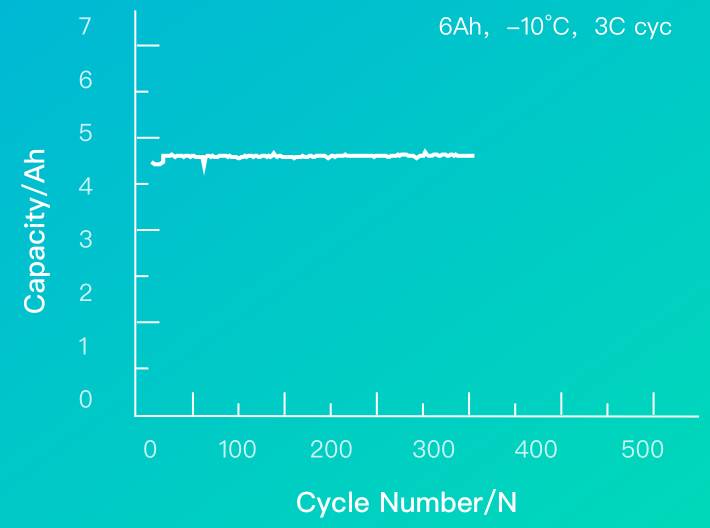
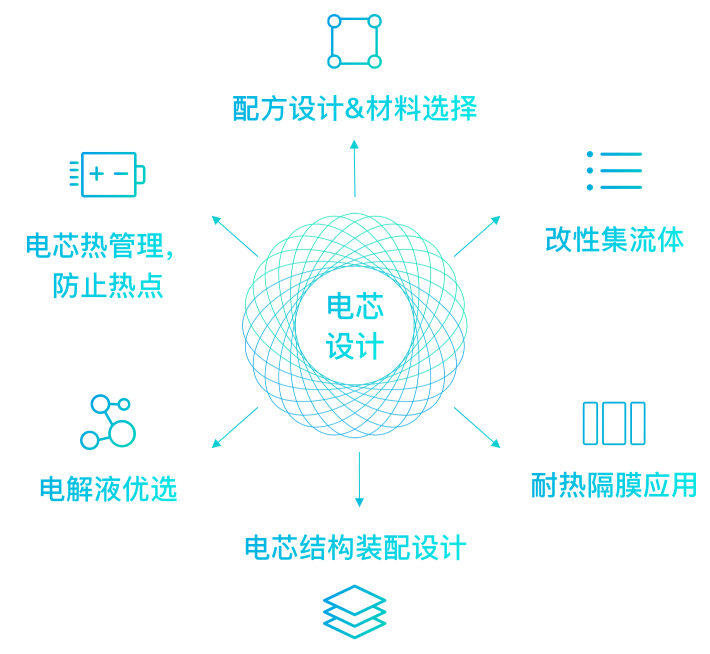

以市场为导向，充分了解客户需求；科学规划，在产一代、研发一代、布局一代
以市场为导向，充分了解客户需求；科学规划，在产一代、研发一代、布局一代
以市场为导向，充分了解客户需求；科学规划，在产一代、研发一代、布局一代
-
基础研究领域
安全性技术
通过优化材料/电极/仿真/预警，实现使用过程中的安全可靠保障；累计6亿km无安全事故
电池单体支撑基础技术研究
电化学诊断技术
电极工艺技术
 -
电芯领域
长寿命技术
自主电解液配方技术/电极低膨胀设计技术，
保障良好的长寿命
石墨体系可实现4000次 钛酸锂可实现20000次超低温技术
1)非晶碳体系可以长期在低温下使用不析锂
2)常温体系，结合ACB加热技术，可实现5oC/min升温加热速率
高比能量电芯技术
国内首个通过验收并商业化应用的300Wh/kg单体电池产品。产品应用于电动载人飞机，使得航时提升至150分钟。单体电池能量密度的提升，将有效缓解用户的“续航里程忧虑”问题
超低温技术
采用单体产品正向设计开发理念，通过单体设计模型，缩短开发周期，降低开发成本，解决限制功率性能瓶颈因素，开发出功率密度高达7000W/kg的单体电池
高安全技术
从材料性能出发，分析电池在滥用条件下的失控机理，量化表征电池的安全性能，建立电池失控模型，分析影响安全性的关键因素，指导电池设计优化，提出有效的安全控制技术并验证
 -
模组与电池包领域
安全性
模组在概念设计初期，进行随机振动、疲劳、机械冲击、热管理仿真设计。在产品开发过程中，进行多项安全验证。
模组满足GB/T31485-2015 电动汽车用动力蓄电池安全要求及试验方法。
模组满足GB/T31486-2015电动汽车用动力蓄电池电性能要求及试验方法。
模组满足GB/T 31467.3-2015电动汽车用锂离子动力蓄电池包和系统: 安全性要求与测试方法。
绝缘安全：模组内部采用双重绝缘防护。
先进性
电池系统系统整租率达85%.
电池系统使用液冷集成箱体方案，有效提高能量密度。
-
BMS领域
全生命周期高可靠智联BMS
-
安全性
接近100%诊断覆盖率
双处理器冗余监控
多级故障保护
多级多参数故障诊断方法
多维度故障定位方法
多角度的故障检测
多级安全预警方法
-
可靠性
物料优选/降额设计
容差分析/SI/PI设计
WCCA分析
SI/PI仿真及测试
环境可靠性验证
一流生产制造工厂
-
EMC设计
从设计、仿真、测试出发，满足
CISPR25、ISO11452-2、
ISO11452-4、ISO10605、ISO16750
等道路车辆标准及客户需求。
-
电池参数检测
电池电压、电流、温度、绝缘
阻值的采集、诊断、分析
高精度及高稳定性的采集信号
-
高精度SOX估算方法
分场景分体系的SOC、SOH的
算法管理/实现多工况容量-
内阻在线辨识/基于数据驱动
的SOE估算方法/应用正割迭
代算法的在线SOP估算 -
其他
数据存储/冗余通信
先串后并/用心做事、专业能
力，为您节约每1分
-